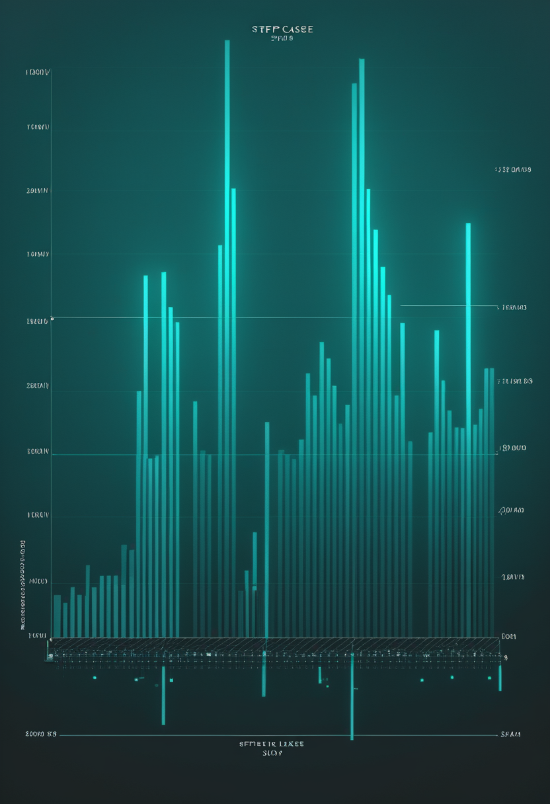

日曜日の便り。9月19日、国境なき医師団(MSF)が、コンゴ民主共和国(DRC)の最前線で働く2万人を対象に、エボラワクチン「エルベボ(ERVEBO)」の有効性を調べる研究を始めた。いまの流行はブンディブギョ型で、この型をねらって承認されたワクチンも治療薬もない。効くと分かったものを配るのではなく、配らざるを得ないものが効いているかどうかを、配りながら記録する。ECDCの累計は3日ぶりに動き、確定7,475例・死亡3,605人。米国の麻疹は3,471例で、1週間に177例増え、香港では今年初の域内感染のチクングニア熱が報告された。命の章は新しい薬の発表がない週で、成人期への移行を調べた当事者調査と、成人11人・30か月の実臨床の記録を伝える。自由の章では、中国のNMPAが脳波データの扱いを縛るAI-BCI規格を公布したこと、電極を置かない構想が報じられたことを取り上げる。畏敬の章では、直径222メートルの月のクレーターが1年以上データの中にあったこと、誕生から100万年未満の最年少の惑星、47個の矮小銀河の候補、そして配線が合わないIBM機の上のサーフェス符号を紹介する。美の章では、感覚を外すAIの人格論、AIの意識をめぐる1,202人の調査、動的同意で守る認知デジタルツイン、40万年前の歯のタンパク質を扱う。
9/14号・8/22号の続報 ― 9月19日、国境なき医師団(MSF)は、コンゴ民主共和国(DRC)の最前線で働く2万人を対象に、エボラワクチン「エルベボ(ERVEBO)」の有効性を調べる研究を、イトゥリ州ブニアで始めた。対象はイトゥリ州と北キブ州の最前線従事者で、期間は9〜12か月、うち接種に3か月、追跡に最低6か月をあてる。ここで押さえておくべき前提が一つある。いまの流行の原因はブンディブギョ型で、この型をねらって承認されたワクチンも治療薬もない。エルベボはほかの型を想定して作られた薬で、MSFは「元々ブンディブギョ型を守るために開発されたものではないが、予備的なデータは一定の防御をもたらしうることを示唆している」と説明し、同時に「このワクチンが今回の流行を終わらせるわけではない」とも明言している。つまりこの研究は、効くと分かったものを配る話ではない。配らざるを得ないものが実際にどれだけ効いているのかを、配りながら記録する話である。前号までの本紙は、累計値・傾き・追跡率といった観測の話を続けてきた。本号で動いたのは介入の側で、「測る」と「効かせる」が同じ2万人の上に重なった。なお、8月に国際調整グループが決めた7万回分(最前線従事者向け5万回・有効性を確かめる第3相試験向け2万回)と今回の研究との対応関係は、MSFの発表からは特定できない(要確認)。
8/13号でNeurologyLiveが論じた「小児期から成人期へのSMAケアの移行期ギャップ」は、体制づくりの必要を訴える記事だった。8月19日にCure SMAが公表した研究は、その先にある「何が移行を成功させるのか」を、当事者への調査で確かめている。掲載誌は『Neurology and Therapy』、対象は18〜29歳のSMA当事者で、横断的な調査である。移行がうまくいった人に共通していたのは、医療者主導の準備(移行に向けた準備ができているかの確認)、医療チームとの計画についての対話、そして書面の移行計画で、単発の引き継ぎ外来だけでは足りなかった。一方で、ほぼ全員が「SMAの専門知識をもつ成人担当の医師を見つけるのが難しい」と答えている。薬の選択肢が増え、子どもの頃から治療を続けた世代が成人期を迎えているいま、問われているのは薬そのものよりも、その後を診る体制の側である。資金は2021〜22年のSMA産業協働(Cure SMA・Biogen・Genentech/Roche・Novartis Gene Therapies・Scholar Rockなど)による。回答者数は本号の出典からは確認できていない(要確認)。
大きな試験の話が続いたあとに、小さな記録を一つ置く。スロベニアのリュブリャナ大学医療センターの臨床神経生理学研究所が『BMC Neurology』に載せた単施設の実臨床研究は、リスジプラムを使った成人のSMA患者11人(平均51歳、範囲27〜82歳、女性9人)を最長30か月追った。全員がそれまでSMAの治療薬を使っていない未治療の成人で、観察期間は2022年5月から2025年4月にあたる。上肢機能の尺度RULMは全体として安定し(7人は維持、4人は2点以上低下)、運動機能の尺度RHSも安定し、呼吸機能の指標も30か月にわたり安定していた。1人が肺炎と多臓器不全で亡くなったが、薬とは無関係と判断されている。限界ははっきりしていて、対象は11人、対照群はなく、安全性のデータは体系的に集められていない。論文の公開は5月で、本号の新しい発表ではない。進行が緩やかな成人では、悪化しないこと自体を成果と読む見方を支える、小さいが具体的な記録である。
本号のSMAは、新しい薬の発表がない週の記録になった(本号の検索範囲で、直近1〜2週のSMAの新規の一次情報は限られた)。代わりに見えるのは薬の周りの生活である。Cure SMAの調査は、移行の成否を分けるのが準備と書面の計画であることを示し、11人の記録は成人の30か月を地味に、しかし具体的に写している。承認のニュースが途切れる時期こそ、治療を続けた人が成人期の医療とどうつながるかが問われる。
9/13号(承認から半年 ― 中国は制度の側を先に固めた)は、中国のBCI医療機器が、NEOの承認(3月13日)、承認後48時間以内の診療報酬コード、用語規格(YY/T 1987–2025、1月施行)といった制度の枠を、装置より先に組んできた経緯を追った。9月14日、国家薬品監督管理局(NMPA)はその先を一つ足した。人工知能(AI)で脳波(EEG)データを処理するBCI医療機器の製品規格を承認・公布したのである。規格が定めるのは、データの取得・処理・注釈付け・保存・アクセスという一連の技術要件と試験方法で、施行は2027年9月1日。当局が挙げる狙いは、EEGデータセットの品質管理基準がばらばらで、作り方も標準化されていないという業界共通の課題への対応である。AIを使うBCIは、大量の脳波から患者の意図を読み取るようにアルゴリズムを訓練するので、その訓練データの質が装置の性能と安全性にそのまま効く。Tech Timesの整理によれば、米FDAには2021年5月のBCIガイダンスと2025年1月のAI医療機器の指針案があるものの、EEGの訓練データの品質要件を個別に定めたものではない。「世界初」という位置づけは、当局の説明に基づく報道である。一部の報道は中国で3本目のBCI医療機器規格と説明するが、CGTNの原文では確認できなかった(要確認)。
頭蓋を開けず、電極も留置しないBCIの構想が、また報じられた。9月18日、業界メディアのRobotics & Automation Newsが、スタートアップSubsenseによるAI活用のナノ粒子型BCIを伝えた(記事の本文は本号では取得できていない)。同社が公表している骨格は次のとおりである。鼻から投与するナノ粒子が血液脳関門を越え、専用のハードウェアと信号処理ソフトウェアと組み合わせて、手術なしで脳活動の記録と調節を行う。2025年12月の資金調達の発表では、総額は2,700万ドル(うち新規1,000万ドル、投資家にGolden Falcon Capital)で、開発段階は前臨床、材料開発・in vitroでのナノ粒子刺激・信号読み取りで初期の成果が出たとしている。本紙がこれまで追ってきた三つの入口 ― Precisionの最長30日の一時留置、Paradromicsの完全植込み、Synchronの血管内留置 ― と比べると、体内に何も残さないという点で別の位置にある。ただし本号で確認できるのは企業側の発表と業界報道までで、査読を経た臨床データではない(要確認)。視線入力については、本号でも直近1〜2週の新しい一次情報を取得できなかった。
2本を並べると、規制の重心が動いているのが見える。これまでBCIの規制は、装置が安全に留置できるか、何日入れてよいかという物理の話だった。中国が今週決めたのは、装置に食わせるデータの素性である。一方で、電極そのものを置かない方式が現れれば、留置日数を軸にした分類も当てはまらなくなる。規格が装置から離れてデータへ向かうことと、装置が体内から離れようとすることは、逆方向に見えて同じ変化の表と裏である。読む側にできるのは、企業の発表と規格の文書を同じ重みで読まないこと。前者は意図を、後者は拘束力を持つ。
MSFの発表によれば、この研究の名は「BRAVO」。保健省が主導する流行対応のなかに組み込まれ、保健省・アフリカCDC・コンゴ国立生物医学研究所(INRB)と科学パートナーが関わる。目的は、ERVEBOをブンディブギョ型の流行下の実環境で使ったときの有効性を評価すること。MSFは「部分的な防御でも、重症化と死亡を減らせる可能性がある」とし、「このワクチンがこの流行を終わらせることはない」と強調している。9/14号で本紙は、接種済みが約2,000人(5万回分の約4%)にとどまり、第3相試験の開始が「10月か11月」へ後退したと報じた。接種が動き出しているなかで、その効果を測る枠組みが追いついてきた、と読める。ただし、これが8月の7万回分の内訳とどう対応するのか、第3相試験とどう関係するのかは、MSFの発表からは特定できない(要確認)。
9/19号で本紙は、ECDCの累計が3日間据え置かれ、確定7,404例・死亡3,577人のままだと報じた。ECDCはその後に更新し、9月16日までのデータで確定7,475例、死亡3,605人、回復1,798人、隔離入院905人とした(公表日は出典により9月17日・18日と表記が割れる)。致死率は本紙の計算で48.2%。前回から確定は+71例で、内訳はイトゥリ41、北キブ27、オー・ウエレ2、チョポ1。新規に占める北キブの割合は、前回の35.6%(59例中21例)から38.0%(71例中27例)へ上がった。累計ではイトゥリが5,792例・死亡2,642人で、36保健区のうち28に及ぶ。流行は7州の167保健区中62に広がっている。隔離入院は930人から905人へ、把握された接触者のうち追跡下にある割合は87.4%から87.6%へ、いずれもわずかに改善した。なお死亡の増分は、累計の引き算では+28人、ECDCの本文では+32人と記され、一致しない(要確認)。EU/EEAへの輸入リスクは、ECDCの評価で引き続き「非常に低い」。次回更新は9月21日の予定である。

米CDCの集計で、2026年の米国の確定麻疹例は9月17日時点で3,471例になった。内訳は47の管轄区域の3,454例と、海外からの訪問者17例である。9/12号で報じた9月10日時点の3,294例から、1週間で+177例、率にして5.4%の増加にあたる。報告された集団発生は39件で、確定例の95%にあたる3,296例が集団発生に関連しており、その内訳は2026年に始まった発生に由来する1,920例と、2025年から続く発生に由来する1,376例である。9/17号が扱った死亡の台帳の食い違いも残ったままで、CDCのページには、米国国民保健統計センター(NCHS)に麻疹を根本死因とする2026年の死亡記録はまだない、と記載されている。
9月17日、香港の衛生防護センター(CHP)は、今年初めての域内感染のチクングニア熱を報告した。患者は55歳の女性で、最近の渡航歴はない。9月7日に発熱・頭痛と、指や手首の関節痛が出て、その後に顔や体に発疹が現れた。クイーン・エリザベス病院の蚊のいない病室で、安定している。渡航歴がないことは、香港の中で蚊を介して感染が起きたことを意味する。CHPは医師に対し、渡航歴を問わず、疑わしい症状の患者には検査を検討するよう求めた(検査は公的検査機関で無料)。関係部署と連携して、さらなる域内伝播の危険を下げる対策も進めている。今年の確定例はこれで3例(域内1例・輸入2例)。報道によれば、昨年は確定82例のうち域内感染が11例あった。媒介するのはAedes属の蚊で、家の周りの水たまりをなくすなど、蚊の発生源を減らすことが予防の基本になる。
4本はどれも「測る」話だが、尺度がそれぞれ違う。MSFの研究は結果が出るまで最低9か月、ECDCの数字は基準日が1〜2日前、CDCの麻疹は1週間単位、香港の1例は1件そのものが警報になる。頻度も単位も違う数字を、一つの物差しで読むことはできない。読む側にできるのは、数字を見たときにまず基準日と分母を探すことである。そのうえで本号の実質的な変化を一つ挙げるなら、新規に占める北キブの割合が35.6%から38.0%へ上がったことだ。全国の累計はわずかに改善の兆しを見せているのに、一州の取り分だけが増えている。
NASAの月周回衛星ルナー・リコネサンス・オービター(LRO)が、2024年春に月面にできた直径約222メートル(728フィート)のクレーターを確認した。「マクゲッチン」と名づけられたこのクレーターは、月科学の先駆者で、米ヒューストンの月惑星研究所の元所長トマス・マクゲッチンにちなむ。衝突体は3〜6階建ての建物ほどの大きさとみられ、LROがこれまでに見つけた新形成のクレーターとしては最大で、約10年前に見つかった従来の記録保持者の約3倍の大きさになる。発見の経緯が興味深い。LROは2024年5月に、すでにこの場所を撮影していた。だが大量の画像のなかから同定されたのは2025年8月で、詳細な撮影が2025年秋、確認が2026年初めになった。穴は1年以上、データの山の中にあったことになる。放出物は100キロメートル超にわたって散らばり、7キロメートルにわたる低温域ができている。この規模の衝突は約132年に一度と見積もられ、論文は「統計的にまれな、ほぼ一生に一度の観測」と書く。成果は『Science Advances』に載った2本の論文による(報道は9月17日)。
9月16日、『The Astrophysical Journal Letters』に、これまで知られるなかで最も若い惑星の報告が載った。「Elias 2-24 b」は、地球から約450光年の若い星Elias 2-24を回る、木星ほどの質量の惑星で、年齢は100万年未満である。見つけたのはチリのディエゴ・ポルタレス大学のアンドレア・ベルナルディ氏(博士課程)らの研究で、ハワイのケック天文台のNIRC2渦コロナグラフによる直接撮像に、ALMAと欧州南天天文台の超大型望遠鏡(VLT)の過去の観測データの解析を組み合わせた。惑星は星から、地球と太陽の距離の約55倍離れた位置にある。ここが問題の核心で、従来の惑星形成の模型では、これほど重い惑星ができるには約500万年が必要とされてきた。観測が模型より速い誕生を示すなら、模型のどこかを見直す必要がある。
多くのシミュレーションは、大きな銀河のまわりに小さな衛星銀河が多数付き従うと予測する。ところが観測では、長く「少なすぎる」と言われ、最近は逆に「多すぎる」とする研究も出て、議論が揺れている。9月16日に『Astronomy & Astrophysics』に載った、イタリア国立天体物理学研究所(INAF)が率いる国際チームの研究は、三つの銀河 ― 渦巻のNGC 5068(約1,700万光年)、レンズ状のNGC 5084(約8,000万光年)、楕円のNGC 5087(約1億光年)― のまわりで、47個の矮小銀河の候補を見つけた。うち既知だったのは4個だけである。欧州南天天文台のパラナル天文台にあるVST(VLTサーベイ望遠鏡)の深い撮像を、3人の研究者が自動のアルゴリズムでなく目視で調べた。候補が本当にそれぞれの銀河の衛星かどうかは、分光観測で確かめるまで証明されない、と著者は述べている。
量子計算の誤り訂正で有力とされるサーフェス符号は、量子ビットが正方格子状に並ぶ配線を前提とする。ところがIBMのHeron世代のプロセッサは「ヘビーヘックス」と呼ばれる疎な配線で、この前提と合わない。南カリフォルニア大学(USC)とQuantum Elementsのダニエル・ライダー氏らは、その不一致のままで誤り訂正が効くことを、実機で示した。9月15日に『Nature Communications』に載った論文の題は「ヘビーヘックス超伝導量子プロセッサ上でのサーフェス符号のスケーリング」。回路の深さを抑えたサーフェス符号と、待機中の雑音を抑える動的デカップリングを組み合わせ、符号を一方向に大きくすると、対応する種類の論理誤りに対する保護が強くなるという、方向別の閾値以下のスケーリングが確認された。この手法は、Quantum ElementsのQiskit関数「Orbit」の土台になっている。9/19号で扱ったqLDPC符号のスピン量子ビット実装に続き、符号を、そのために作られていないハードウェアへ載せる報告が並んだことになる。具体的な符号距離や誤り率の数値は、本号で確認できた出典には示されていない(要確認)。
4本はどれも「見つけていたのに気づかなかった」か「思ったより早い」の形をしている。月のクレーターは、できてから同定まで1年以上データの中にあった。惑星は、模型が必要とする約500万年の5分の1以下の時間で生まれていた。矮小銀河の候補は、47個のうち43個が新顔だった。量子は、専用に作られていない配線の上でも成り立つ方向へ進んでいる。観測が増えるほど、見落としていたものと、模型のほうの遅さが同時に見えてくる。222メートル、100万年未満、47個と、数字が細かいほど、次の検証もしやすい。
7月9日にarXivへ投稿された論考『Artificial Persons』(Ned Howells-Whitaker氏、Seth Lazar氏)は、AIの道徳的地位は感覚(sentience)に依存する、という前提そのものに異を唱える。持ち出すのはロールズの「政治的な人格の構想」で、正義の感覚をもつ能力と、善の構想をもつ能力という二つの道徳的能力が、完全な道徳的地位の十分な根拠になるとする。著者らの主張は、この二つはどちらも感覚を必要とせず、原理的には感じないAIでも持ちうる、というものだ。今のAIにこの二つの能力はないが、設計次第で持たせられるようになる可能性がある、と著者らは述べる。人間の権利の枠組みをそのまま人工の人格へ広げても足りず、根本的に異なる存在どうしの関係を律する新しい政治哲学が要る、とし、AIがこの二つの能力を得ていく進み方を、偶然の出現に任せず計画的に追う研究を求めている。論考の投稿は2か月前で、直近1〜2週の新規ではない。著者の所属は本号では確認できていない。
AIが意識をもつかという問いは、専門家のあいだでも決着していない。9月17日に『The Conversation』に載った、ルシウス・カヴィオラ氏の寄稿は、その不確かさそのものが社会の分断の種になりうると論じる。裏付けとして引くのは、アリ・ラダク氏らの「AIの意識への一般の懐疑」という研究(2025年の査読前論文)で、米国の1,202人に尋ねると、45%は将来のAIの意識は不可能と考え、可能とみるのは23%、残りは分からないと答えた。カヴィオラ氏は、AIが人間の書いたものから学ぶ以上、「意識があるように見えること」と「意識があること」は分かれうると述べる。多くの人がAIを、意識をもち感情が大切な存在とみなし始めれば、この争いは中絶や気候変動のように割れうる、という警告である。結びは「専門家の意見が割れているのに、一般の人は何を信じればよいのか」という問いだ。本紙が7/10号で扱ったサセックスでの会議は、専門家どうしの理論の対立だった。今回は、その外側にいる人々の側の数字である。
7/13号は、認知デジタルツイン(個人の認知や行動を模すAIモデル)の倫理リスクを論じたarXiv論文(2606.23094・査読前)が、動的同意などを提言していると報じた。今回は、その提言を実装の側から具体化した論文が見つかった。S. Chockalingam氏、S. Pirbhulal氏、H. Abie氏による『認知デジタルツインの安全とプライバシーを動的同意で改善する ― 医療と強靭な社会のために』で、国際会議HCI International 2025の論文集(Lecture Notes in Computer Science 第16337巻、刊行は2026年)に収められている。認知デジタルツインは、認知機能と実時間のIoTデータを組み合わせ、模擬・意思決定・サイバー耐性を支える仮想モデルで、医療や福祉、スマートシティで使われる。問題は、データが絶えず流れ、判断が自動で下される環境では、契約時に一度だけ取る静的な同意が機能しないことだ。提案されたDC-TWINは、動的同意を組み込んだ枠組みで、多層の構成のなかに、遵守状況の監視、リスクを意識した利用者画面、同意履歴の追跡、そして文脈の信号と人の要因をもとにデータアクセスの要求を実時間で評価する「動的同意の推論エンジン」を備える。モデルが更新され続けるなら、同意も更新され続けなければ釣り合わない。
人類の系統をたどる手がかりは、DNAだけではない。DNAは数十万年を生き延びることが少ないが、歯のエナメル質のタンパク質はそれより長く残る。中国科学院古脊椎動物・古人類研究所の付巧妹(Qiaomei Fu)氏らは、周口店(北京原人の遺跡)、和県(Hexian)、Sunjiadongの3遺跡から出た、40万年以上前のホモ・エレクトスの歯6点を解析し、エナメル質のタンパク質11種を取り出した。6点すべてに共通して見つかったアミノ酸の変異は二つある。AMBN遺伝子のA253Gは、ジョージア(ドマニシ)のホモ・エレクトス、アタプエルカのホモ・アンテセッサー、デニソワ人、ネアンデルタール人、現生人類のいずれでも確認されていない未知の変異である。もう一つのAMBN M273Vは、これまでデニソワ人で見つかっていた変異で、中期更新世のホモ・エレクトスに近い集団を通じて別の系統へ持ち込まれた可能性を示すという。論文は5月13日に『Nature』に載り、9月9日にScienceDailyが改めて紹介した。本号の新しい発表ではないが、8/19号で扱った「現生人類のDNAに残る幽霊祖先」に対して、化石の側から出てきた具体的な手がかりとして読める。
4本は、人格・世論・同意・系統という異なる階で、同じ問いを別の言葉で問うている。何をもって「人」とみなすのか。『Artificial Persons』は感覚を条件から外し、1,202人の調査は専門家の外にある溝を数え、DC-TWINは同意を一回から継続へ動かし、40万年前の歯は系統の境目が想像よりにじんでいることを示す。基準が先に動けば、後から現れた技術は最初からその基準で測られる。基準が後回しになれば、既成事実のほうが基準を決める。今週の4本は、どれも基準の側を先に考えようとする試みとして読める。
日曜日の便り。9月19日にMSFが始めた、DRCの最前線従事者2万人を対象にしたエルベボの有効性研究は、承認されたワクチンがないブンディブギョ型の流行のなかで、配らざるを得ないものが効いているかを配りながら記録する試みだった。ECDCの累計は3日ぶりに動いて確定7,475例・死亡3,605人になり、新規に占める北キブの割合は35.6%から38.0%へ上がった。米国の麻疹は3,471例で1週間に177例増え、香港では今年初の域内感染のチクングニア熱が報告された。命の章は新しい薬の発表がない週で、成人期への移行を調べたCure SMAの当事者調査と、成人11人・30か月の実臨床の記録を伝えた。自由の章では、中国のNMPAが脳波データの扱いを縛るAI-BCI規格を公布したこと、電極を置かない構想が報じられたことを取り上げた。畏敬の章では、直径222メートルの月のクレーターが1年以上データの中にあったこと、誕生から100万年未満の最年少の惑星、47個の矮小銀河の候補、配線が合わないIBM機の上のサーフェス符号を紹介した。美の章では、感覚を外すAIの人格論、AIの意識をめぐる1,202人の調査、動的同意で守る認知デジタルツイン、40万年前の歯のタンパク質を扱った。
では、また明日の朝に。 — JaH